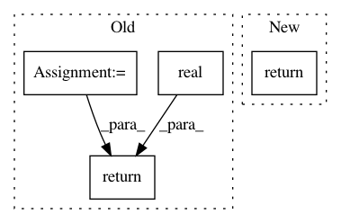

52cdf4bec8d2c8c14e6e9ce51799f587086bfd37,qucumber/utils/cplx.py,,scalar_divide,#Any#Any#,350
Before Change
:rtype: torch.Tensor
y_star = conjugate(y)
numerator = scalar_mult(x, y_star)
denominator = real(scalar_mult(y, y_star))
return numerator / denominator
def inverse(z):
z_star = conjugate(z)
After Change
:returns: x / y
:rtype: torch.Tensor
return scalar_mult(x, inverse(y))
def inverse(z):
Returns the multiplicative inverse of `z`. Acts elementwise.
In pattern: SUPERPATTERN
Frequency: 3
Non-data size: 4
Instances
Project Name: PIQuIL/QuCumber
Commit Name: 52cdf4bec8d2c8c14e6e9ce51799f587086bfd37
Time: 2019-12-28
Author: emerali@users.noreply.github.com
File Name: qucumber/utils/cplx.py
Class Name:
Method Name: scalar_divide
Project Name: thunlp/OpenKE
Commit Name: 0ab6621dcd3e9cd97a257ea2d8d05b23bfba8609
Time: 2020-04-08
Author: thu.hanxu13@gmail.com
File Name: openke/module/model/HolE.py
Class Name: HolE
Method Name: _ccorr
Project Name: PIQuIL/QuCumber
Commit Name: 2ba68b4be3249b7297ea26b1ff5c790bd0d4794f
Time: 2019-12-22
Author: emerali@users.noreply.github.com
File Name: qucumber/utils/unitaries.py
Class Name:
Method Name: rotate_rho_prob